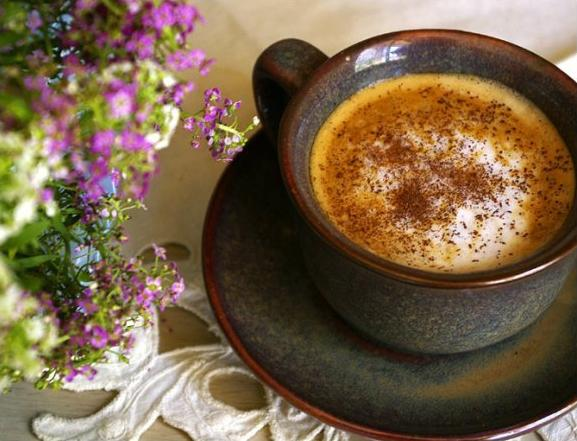
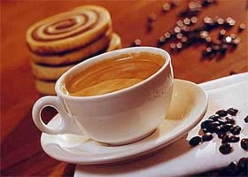

Кофе с коньяком

Как пить кофе с коньяком, определенных четких правил не существует, все зависит исключительно от вкусовых предпочтений. Некоторые любят эти напитки пить по отдельности, заваривая кофе по определенным канонам и подавая его в горячей чашке. К такому кофе коньяк подается охлажденный. Однако большинство людей предпочитает оба продукта соединять вместе, при этом еще и приправлять специями или сливками.
Ингредиенты:
Кофе «Австралия»
Чтобы ваш день удался, а голова была ясной с самого утра и до вечера, приготовьте к завтраку чашечку кофе "Австралия". Насладитесь умопомрачительным напитком с тонкой ноткой цитрусовых и ароматом гвоздики!
Ингредиенты:
Карамельный кофе с лаймом

Просто восхитительный неземной аромат и изумительный вкусовой акцент карамельного кофе с лаймом заставит вас на несколько минут забыть обо вс на свете, погрузившись в мир кофейного блаженства.
Ингредиенты:
Кофе по-кипрски
Завораживающий терпкий аромат и яркий выразительный вкус кофе по-кипрски непременно заставит вас на мгновенье перенестись в этот теплый средиземноморский остров.